A Mysterious do 3/12/21 Click here for video
This year we met in Bod outside Stoke station where we had time for a quick drink before train tickets were handed out. Yup led the way through the turnstiles to return back to Bod via the platform. Unfortunately several missed the leader and were delayed, ending up on platform 2.
Spike whistled to announce it was time to leave and all the trains immediately left the station.
15 minutes later we arrived in Congleton, still deafened by the infamous whistle. We crossed the newly refurbished railway bridge, which had been opened especially for our visit, and continued on to the Wonky Pear. Sarnies, pork pies and sausage rolls from the adjacent butty shop had been provided and were soon scoffed. The last tray with a few sausage rolls was passed overhead to Bill but only crumbs were left by the time it got to him, as the vultures swooped.
JC spied his chance to visit the toilets and chose the ladies as it didn’t have a crack in the doors, unlike the mens. He wasn’t bothered about being seen, but in trapping his little doodicker in the crack and ending up singing like Tiny Tim.!!
Taxis arrived to whisk us on to the Cheshire Brewhouse; well most of us. Unfortunately one of the minibuses departed with 2 empty seats, resulting in Spike and Yup having to wait for a further taxi to be sent back for them.
Sadly they were also dropped off at the edge of the industrial estate and Spike had to endure a 400 yards hobble with his walking sticks.
The bar area was bigger than anticipated and had one of the warmest heaters ever. No need for extra thick coats and gloves after all.
Sadly, the owner admitted it had been a very tough year with the Covid crisis and that he may have to close the brewery down in the near future. Very sad.
Taxis arrived an hour later and took us to the Barley Hops. With 4 casks and 10 kegs there was a fair choice for everyone.
Amazingly, Jacko had not visited any of tonight’s current venues, at least in their present states. He had lived just a few yards away from the brewery however when he was a young lad…
It was a slow amble to the KingfishR, a restaurant we’ve been to before but many years ago when Jacko retired.
The service was excellent. After poppadoms and a meat platter, 4 main dishes were provided although the lamb madras proved to be too hot for some. The majority enjoyed it however with the chicken Korai being voted the best.
Sambuccas were ordered before the bill was settled as there was enough left in the kitty.
The first of the taxis arrived bang on time for the return to the station. There was a small salsa or rumba dance demo given by Huge and DC who were held upright until the later taxi arrived. Jacko, Keithee and Huge caught convenient buses back home.
This year’s mysterious took on a slightly different format this year due to possible pandemic restrictions but at least it had returned. It was ironic that Spike had ended up walking more than anticipated despite taxis being arranged especially for him, but all had worked out in the end.
Here’s to next year’s
Cheers
Yuppers
(enjoy yer mysterious dos)
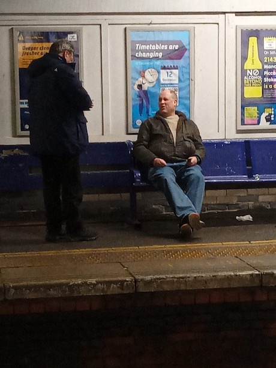
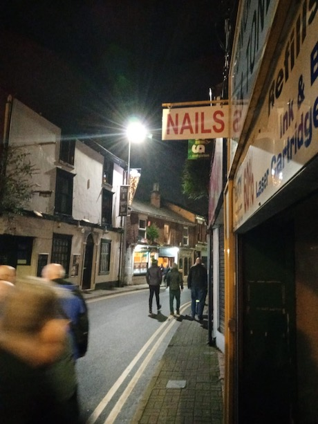
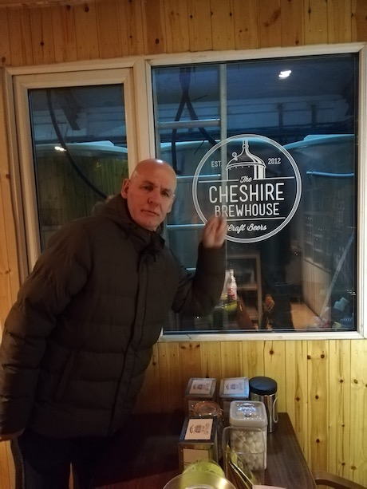
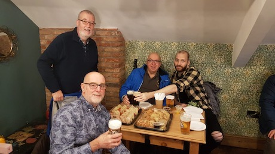
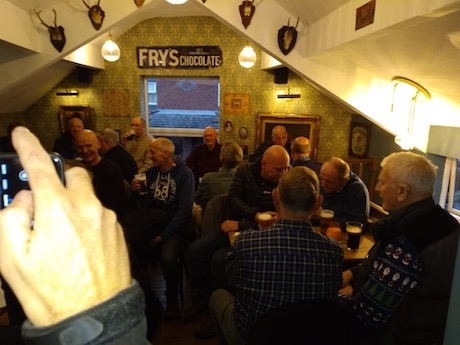

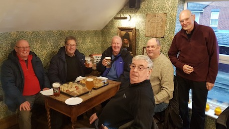
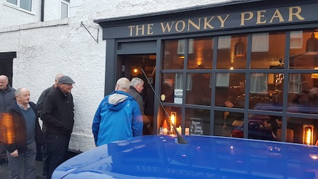
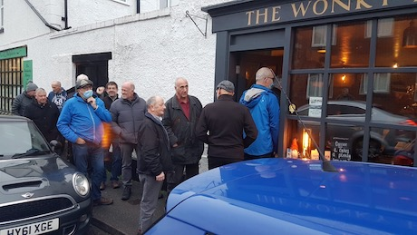
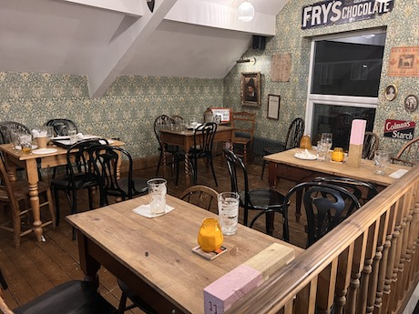
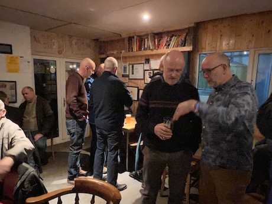
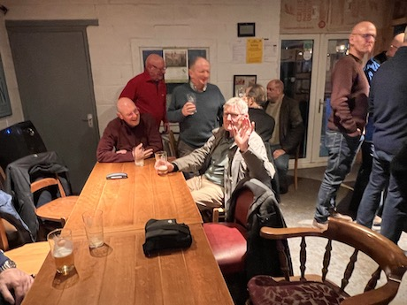
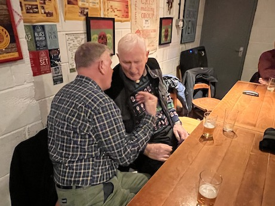
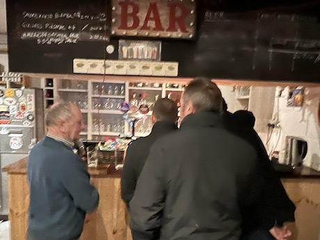
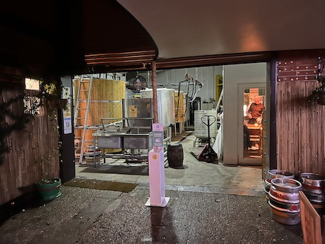